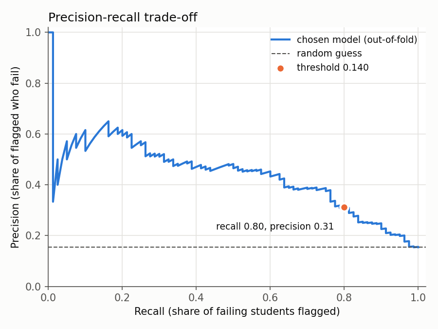
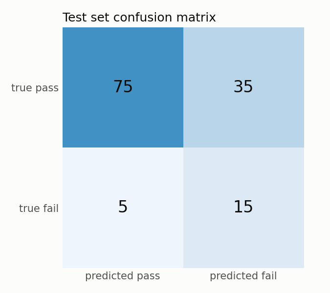
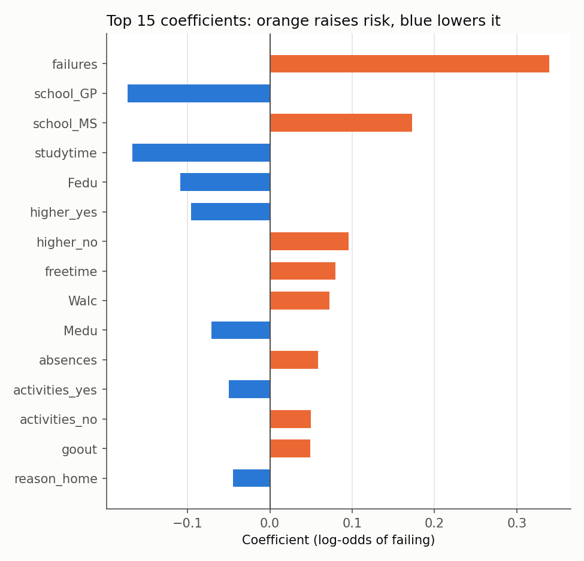

Mohamed Reda Zarrouk and Georgy Salameh · PGE 2 final project, Machine Learning × Advanced
Python · November 2026 · Code: student_risk package, analysis in
notebooks/analysis.ipynb
User and decision. The tool is meant for a secondary school's teaching team at the start of the school year. For each student it estimates the probability of failing the year, and flags the students to whom the school should offer tutoring before any grade of the year is known.
Target and task. fail = 1 if the final grade G3 is below 10 out of 20,
otherwise 0. This is a binary classification task in which "fail" is the positive and minority
class (15.4 % of students).
Cost of each mistake. A false negative (a failing student who is not flagged)
gets no help and may fail the year: this is the costly error. A false positive (a passing
student who is flagged) costs some tutoring time, and extra help rarely harms a student. We
therefore put recall first: we require a recall of at least 0.80 (set in
config.yaml) and, among the thresholds that reach it, we choose the one with the best
precision, so that tutors are not flooded with false alarms.
We use the UCI Student Performance dataset (id 320, CC BY 4.0; Cortez & Silva,
2008), loaded with ucimlrepo by our DatasetLoader class. It has
649 students and 33 columns: 30 features plus the three period grades G1, G2 and G3.
predict accepts empty fields.Pipeline. All preparation is inside one scikit-learn Pipeline whose first
step is a ColumnTransformer: numeric columns get median imputation then
standardisation; text columns get most-frequent imputation then one-hot encoding (56 columns,
unknown categories ignored). Because the whole pipeline is refitted on each training fold, the
scaler and the encoder never see the validation fold, so no information leaks into the
cross-validation scores.
Protocol. Every choice was made on the training set with the same 5-fold
StratifiedKFold (seed 42) for every model. We started from a
DummyClassifier (always "pass") and an untuned logistic regression, then compared four
models, each tuned with GridSearchCV (grids in config.yaml):
LinearSVC inside CalibratedClassifierCV to obtain
probabilities): same C and class-weight grid;Metric. Models are refitted and compared on average precision (AP, the area under the precision-recall curve). AP focuses on the rare positive class and does not depend on a threshold, which is chosen separately. ROC-AUC, recall, precision and F1 are reported as well.
Selection rule. We take the model with the best mean CV AP, but if a simpler model is within one standard deviation of it, we prefer the simpler one. The simplicity order is L2 logistic regression < L1 logistic regression < linear SVM < k-NN.
Threshold. Trainer computes out-of-fold probabilities for the 519
training students (each student is predicted by a model that did not see them, on the same five
folds) and chooses the threshold with recall ≥ 0.80 and the best precision.
Single test. The chosen pipeline, refitted on the whole training set, and the chosen threshold are scored once on the 130 test students, with a confusion matrix and a 95 % Wilson interval for the test recall. Nothing was changed afterwards.
| Model | Best hyperparameters | AP (std) | ROC-AUC | Train AP | Recall @0.5 |
|---|---|---|---|---|---|
| Dummy (always "pass") | – | 0.154 | 0.500 | – | 0.00 |
| Logistic regression, untuned | defaults | 0.457 | 0.779 | – | 0.30 |
| Logistic regression L2 (chosen) | C = 0.01, no class weight | 0.500 (0.143) | 0.803 | 0.560 | 0.05 |
| Logistic regression L1 | C = 0.1, no class weight | 0.538 (0.158) | 0.828 | 0.564 | 0.24 |
| Linear SVM (calibrated) | C = 0.001, balanced | 0.500 (0.147) | 0.803 | 0.552 | 0.23 |
| k-NN | k = 31, distance weights | 0.510 (0.179) | 0.768 | 1.000 | 0.05 |
Table 1. Source: reports/baseline.csv and
reports/model_comparison.csv, written by student-risk train. AP of the
dummy equals the fail rate. Recall at the default threshold 0.5 is shown only to motivate the
threshold choice.
Every tuned model ranks students far better than the dummy. L1 logistic regression has the best mean AP (0.538), but its standard deviation is 0.158 and all four models are within one standard deviation of it: with 80 fails in the training set, the folds cannot separate them. The rule therefore picks the simplest model, L2 logistic regression with C = 0.01. k-NN clearly overfits (train AP 1.000 against 0.510 in CV). Because the hyperparameters and the model were chosen on the same folds, the CV score of the chosen model is slightly optimistic.
| Rule | Threshold | Recall | Precision | Flagged |
|---|---|---|---|---|
| Default | 0.500 | 0.050 | 0.571 | 1.3 % |
| Recall ≥ 0.70 | 0.171 | 0.725 | 0.389 | 28.7 % |
| Recall ≥ 0.80 (chosen) | 0.140 | 0.800 | 0.312 | 39.5 % |
| Recall ≥ 0.90 | 0.116 | 0.900 | 0.248 | 55.9 % |
Table 2. Source: reports/threshold_report.csv and
reports/threshold_tradeoff.csv.
At 0.5 the model catches only 4 of the 80 failing students, because the strong regularisation keeps its probabilities low. At the chosen threshold of 0.140 it catches 64 of 80 (recall 0.80) with precision 0.31, which means flagging 39.5 % of the students. Table 2 shows the price of recall, so that a school can pick the row that matches its tutoring capacity.

| Metric | CV / out-of-fold (train) | Test |
|---|---|---|
| ROC-AUC | 0.803 | 0.778 |
| Average precision | 0.500 | 0.346 |
| Recall at 0.140 | 0.800 | 0.750 (15 / 20) |
| Precision at 0.140 | 0.312 | 0.300 |
| F1 at 0.140 | 0.449 | 0.429 |
| Share of students flagged | 39.5 % | 38.5 % |
Table 3. Confusion matrix on the test set: TN 75, FP 35, FN 5, TP 15.
The model catches 15 of the 20 failing test students and misses 5, with 35 false alarms. The recall of 0.75 is just below the 0.80 goal, but with only 20 failing students its 95 % Wilson interval is [0.53, 0.89]: the test set cannot tell a true recall of 0.75 from one of 0.80. Precision and the flagged share match the out-of-fold estimates closely. The drop in AP (0.500 to 0.346) is consistent with the optimism of model selection and with the small test set.

Reading the coefficients. A coefficient of the logistic regression is a change in the log-odds of failing. Numeric features are standardised, so a coefficient is the effect of +1 training standard deviation, and ecoefficient is the factor applied to the odds. Text features are one-hot encoded with every category kept; with the L2 penalty, the two columns of a yes/no feature get opposite coefficients, and what matters is their difference. Coefficients are small overall because C = 0.01 is a strong penalty. They describe associations, not causes.

Sensitivity to the G3 = 0 students. With the same model and hyperparameters and the same 5-fold CV, removing the 11 training students with G3 = 0 leaves ROC-AUC almost unchanged (0.803 → 0.805). AP goes from 0.500 to 0.464, but AP depends on the fail rate, which also changes (15.4 % → 13.6 %), and the difference is well within one standard deviation. Nine of the 11 G3 = 0 students are flagged out-of-fold, so they are not hard cases. Our decision to keep them stands.
Fairness. We applied the chosen threshold to the out-of-fold probabilities separately for each group:
| Group | Students | Fails | Recall [95 % Wilson] | Precision | Flagged |
|---|---|---|---|---|---|
| Female | 303 | 40 | 0.75 [0.60, 0.86] | 0.28 | 35.0 % |
| Male | 216 | 40 | 0.85 [0.71, 0.93] | 0.34 | 45.8 % |
| School GP | 339 | 25 | 0.68 [0.48, 0.83] | 0.22 | 23.3 % |
| School MS | 180 | 55 | 0.85 [0.74, 0.92] | 0.37 | 70.0 % |
Table 4. Out-of-fold results on the 519 training students, threshold 0.140.
Because the model uses the school as a strong signal, 70 % of MS students are flagged, whereas a failing GP student is more likely to be missed. Boys are flagged more often than girls. Each recall is based on only 25 to 55 failing students, so the intervals are wide and overlap: these gaps are warnings to monitor, not proven biases.
1. Small data and optimistic selection. With 519 training students and 80 fails, CV scores vary strongly from fold to fold (AP standard deviation ≈ 0.14) and the four models are statistically tied. Choosing the model on the same folds makes its CV score optimistic (AP 0.500 in CV, 0.346 on test), and the test set has only 20 fails, so the test recall is uncertain (interval [0.53, 0.89]). A larger dataset, or repeated or nested cross-validation, would give more reliable estimates.
2. Limited signal without grades. Once G1 and G2 are excluded, the profile features carry only moderate information: reaching a recall of 0.80 means flagging about 40 % of all students, and only about one flagged student in three actually fails. The model is linear and cannot capture interactions between features unless they are added by hand. It was trained on two schools over one period, so it may not transfer to other schools, countries or years without being retrained and checked again.
The errors fall on real people. About one failing student in four is missed (5 of 20 in the test set), so "not flagged" must never be read as "safe"; and about two flagged students in three would have passed, so a flag must lead only to an offer of support, never to a sanction, a lower expectation or a label in the student's file. The model also relies on the school attended, past failures and parents' education, which reflect social background as much as individual effort; the group rates in Table 4 already differ, so the tool could reinforce existing inequalities unless outcomes are checked per group regularly and a teacher keeps the final decision. Finally, the inputs are sensitive personal data (family situation, parents' jobs and education, alcohol use, health, romantic relationships): collecting them needs a clear legal basis, informed students and families, access limited to the staff who act on the flags, and a strict retention period. Features that are not needed, or that are too intrusive, should be removed even at some cost in accuracy.
All results come from the student_risk package: pip install -e ., then
student-risk train (writes reports/*.csv and the model) and
student-risk evaluate (test metrics). The notebook calls the same package and checks
that it recovers exactly the saved threshold and tables. Seed 42 everywhere; 19 pytest tests pass.
P. Cortez, Student Performance [Dataset], UCI Machine Learning Repository, 2008. https://doi.org/10.24432/C5TG7T. Licence CC BY 4.0.
P. Cortez and A. M. G. Silva, "Using Data Mining to Predict Secondary School Student Performance", Proceedings of the 5th Annual Future Business Technology Conference (FUBUTEC 2008), 2008.
E. B. Wilson, "Probable inference, the law of succession, and statistical inference", Journal of the American Statistical Association, 22(158), 1927.
Generative AI use is declared in AI_USAGE.md.